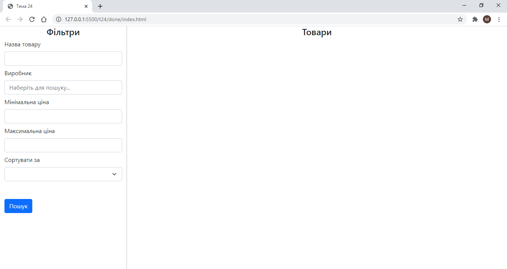
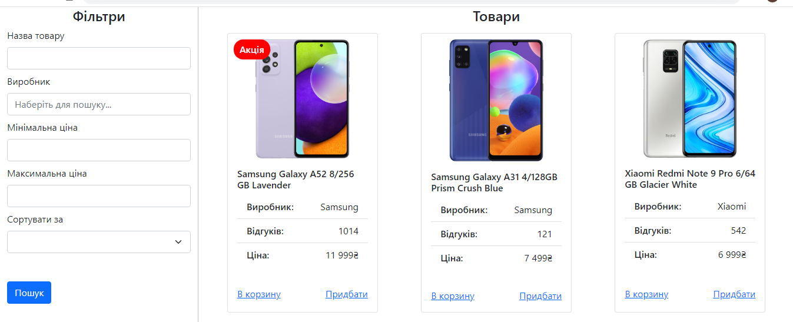
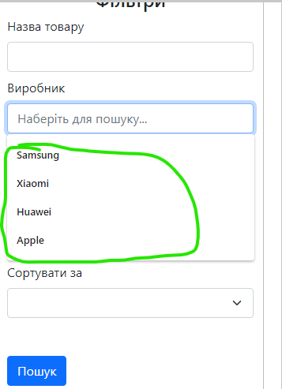
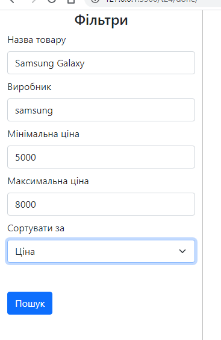
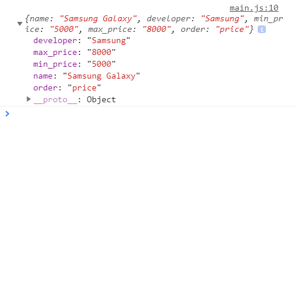

Тема 24
1. Використайте готову верстку для завдання: index.html, style.css.

2. Відобразіть товари із даного масиву на сторінку array.js

3. Створіть функцію findDevelopers() яка буде знаходити всіх унікальних виробників товарів які присутні в об'єкті з описом товару. Збережіть їх у окремий масив та відобразіть їх значення у поле з вибором виробника.

4. Створіть функцію saveFilter() яка зберігатиме поля із фільту в окремий об'єкт. Зберігайте цей об'єкт в localstorage.


5. Створіть функцію showProducts() яка фільтурватиме товари відповідно до фільту.
6. Якщо фільтр вже збережено у localstorage, вокориcтовуйте його після завантаження сторінки.